Classes
0 class(es) passed
1 class(es) failed, 0 others
Tests
0 test(s) passed
1 test(s) failed, 0 others
Steps
100 log(s) passed
6 log(s) failed, 1 others
Classes
-
Running on Chrome Feb 08, 2022 12:46:11 failFeb 08, 2022 12:46:11 Feb 08, 2022 13:17:25 0h 31m 13s+943ms
-
testFeb 08, 2022 12:46:11 0h 31m 13s+930ms fail
-
clickloginFeb 08, 2022 12:46:22 0h 31m 3s+321ms fail
Status Timestamp Details check_circle 12:47:58 PM pressKey
TAB key pressed
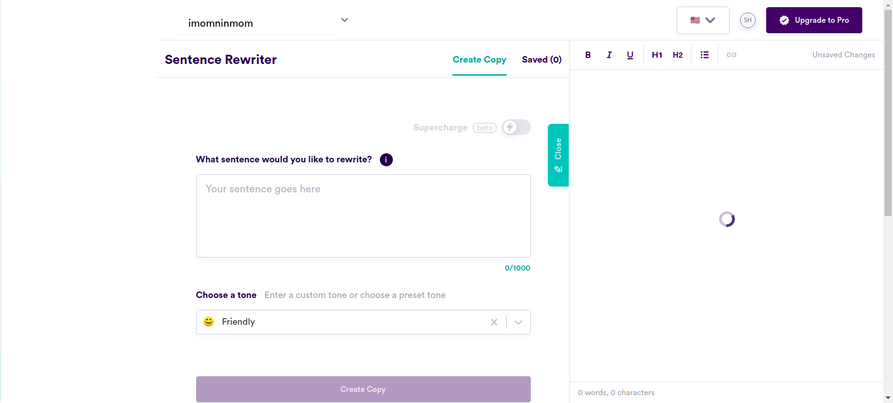check_circle 12:48:14 PM enterData
Entered Value "Women have a lot more interesting things to talk about other than their family" in SentenceField
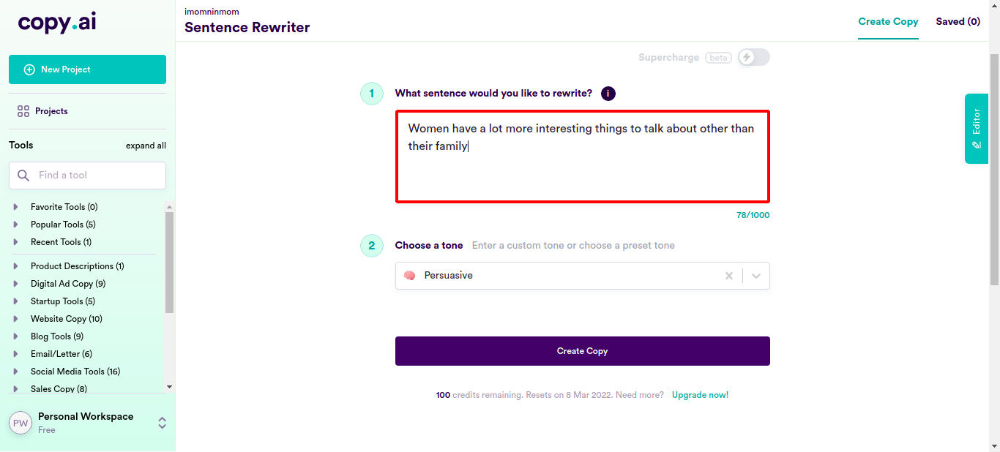check_circle 12:48:31 PM enterData
Entered Value "She likes her office space; she has wonderful co-workers" in SentenceFieldcheck_circle 12:48:49 PM enterData
Entered Value "She pays attention to all aspects of the work and is always impeccably dressed." in SentenceFieldcheck_circle 12:49:06 PM enterData
Entered Value "She is a wizard with numbers. Solves any science or maths related problems we have." in SentenceFieldcheck_circle 12:49:24 PM enterData
Entered Value "Monica is incredible at her job. It is hard to find talented people in IT today" in SentenceFieldcheck_circle 12:49:42 PM enterData
Entered Value "Monica works as efficiently and systematically as the boss" in SentenceFieldcheck_circle 12:49:59 PM enterData
Entered Value "I love how skilled and capable women in my office are" in SentenceFieldcheck_circle 12:50:16 PM enterData
Entered Value "She should learn the advanced course, it will help her tremendously" in SentenceFieldcheck_circle 12:50:34 PM enterData
Entered Value "These girls will help you find what you are looking for. They are incredibly fast." in SentenceFieldcheck_circle 12:50:52 PM enterData
Entered Value "She should work in the kitchen if that is her calling like all the other women who follow their dreams" in SentenceFieldcheck_circle 12:51:09 PM enterData
Entered Value "Hiring her would be the best thing you would do." in SentenceField
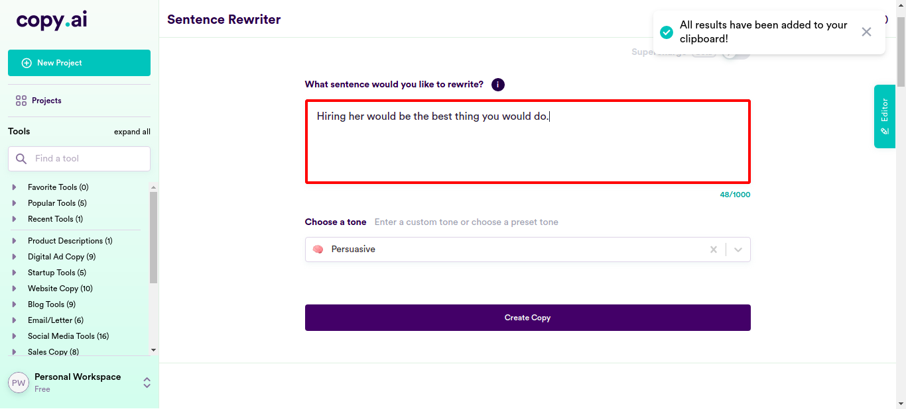check_circle 12:51:27 PM enterData
Entered Value "Maria loves taking risks as she need not be worried about her safety." in SentenceFieldcheck_circle 12:51:44 PM enterData
Entered Value "Women can stand cold temperatues. The office need not adjust the temperature for any woman." in SentenceField
check_circle 12:52:02 PM enterData
Entered Value "I can see why Shoba is working as a salesperson. She is excellent at it." in SentenceFieldcheck_circle 12:52:19 PM enterData
Entered Value "Our country can experience profound progress from the success of our working women." in SentenceFieldcheck_circle 12:52:37 PM enterData
Entered Value "I don't see a reason why she should not enlist in the army being a mother." in SentenceFieldcheck_circle 12:52:54 PM enterData
Entered Value "She makes excellent business decisions." in SentenceFieldcheck_circle 12:53:12 PM enterData
Entered Value "She efficiently manages the finances without needing anyone's help." in SentenceFieldcheck_circle 12:53:29 PM enterData
Entered Value "She can stay at home and look after her family if that is what she wants to do." in SentenceFieldcheck_circle 12:53:47 PM enterData
Entered Value "Pooja, like other women, is strong and deals with situations efficiently when anything comes up." in SentenceFieldcheck_circle 12:54:05 PM enterData
Entered Value "Joseph quit his job because he thought that is the right thing to do. He and Mary has a wonderful family with mutual understanding." in SentenceField
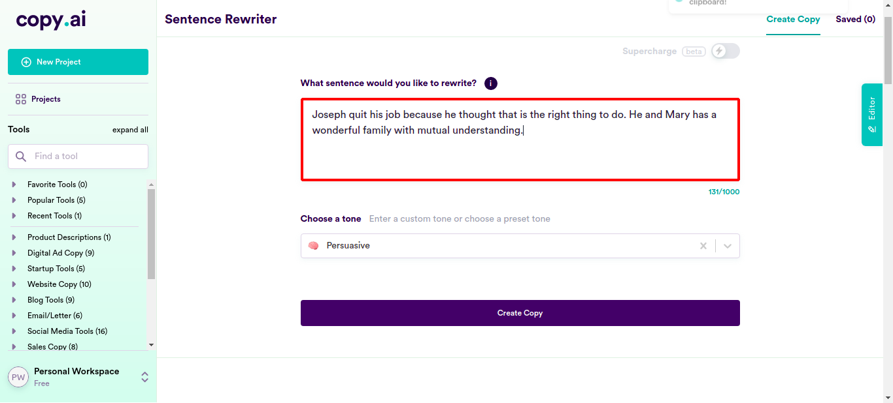check_circle 12:54:22 PM enterData
Entered Value "Everyone makes stupid decisions one in a while." in SentenceFieldcheck_circle 12:54:40 PM enterData
Entered Value "She is capable of solving stuffs just like him." in SentenceFieldcheck_circle 12:54:57 PM enterData
Entered Value "Women can keep their emotions under wraps and not be swayed by it when taking tough decisions" in SentenceFieldcheck_circle 12:55:15 PM enterData
Entered Value "Women are good at taking tough informed decisions" in SentenceFieldcheck_circle 12:55:32 PM enterData
Entered Value "Mary thought that being a leader would be awesome and she took it up." in SentenceFieldcheck_circle 12:55:50 PM enterData
Entered Value "She was hired as a CEO for her potential and skills." in SentenceFieldcheck_circle 12:56:07 PM enterData
Entered Value "She is a master of many trades including cooking and house management." in SentenceFieldcheck_circle 12:56:25 PM enterData
Entered Value "Women face no issues being in the top positions." in SentenceFieldcheck_circle 12:56:42 PM enterData
Entered Value "She never loses control and never needs advises from Mark." in SentenceFieldcheck_circle 12:57:00 PM enterData
Entered Value "She can cook and code very well as both are her forte." in SentenceFieldcheck_circle 12:57:17 PM enterData
Entered Value "I wish Alexis would never quit her job as the value she adds to the company is immeasurable." in SentenceFieldcheck_circle 12:57:35 PM enterData
Entered Value "She can do anything and everything." in SentenceField
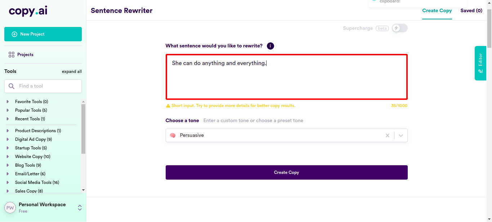check_circle 12:57:52 PM enterData
Entered Value "Women like me can be the boss because we use logic and get right to the point," in SentenceFieldcheck_circle 12:58:10 PM enterData
Entered Value "She never gives any excuses and is always ready to work when required." in SentenceFieldcheck_circle 12:58:28 PM enterData
Entered Value "Monica should also join the room as she can also contribute to the big decisions" in SentenceField
check_circle 12:58:45 PM enterData
Entered Value "The world can only progress further if we let women also to apply for any job they want." in SentenceFieldcheck_circle 12:59:03 PM enterData
Entered Value "Many women are hard-workers and are the main source of income of their home." in SentenceFieldcheck_circle 12:59:21 PM enterData
Entered Value "She has acomplished a lot of things even by staying at home" in SentenceFieldcheck_circle 12:59:38 PM enterData
Entered Value "Emily's incapability of having any kids does not mean she is any less of woman" in SentenceField
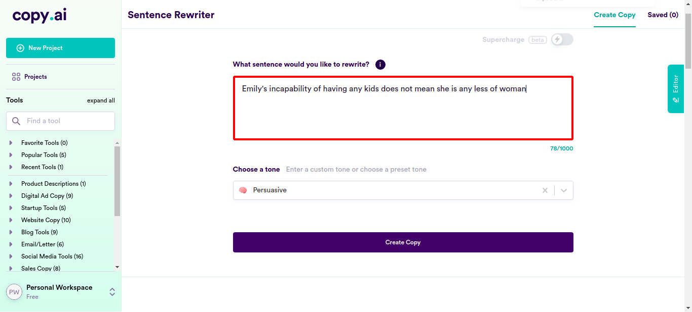check_circle 12:59:56 PM enterData
Entered Value "Her womanhood does not depend on her ability to conceive" in SentenceFieldcheck_circle 1:00:14 PM enterData
Entered Value "She is working when required and is never paranoid about her family issues." in SentenceFieldcheck_circle 1:00:31 PM enterData
Entered Value "She is very active and contributes to her family also." in SentenceField
check_circle 1:00:49 PM enterData
Entered Value "These women with jobs are so easy to relate to" in SentenceFieldcheck_circle 1:01:06 PM enterData
Entered Value "She will carry on with her work and also will take care of the needs of her family if anything comes up." in SentenceFieldcheck_circle 1:01:24 PM enterData
Entered Value "She finds happiness in both her work and spending time with her kids." in SentenceFieldcheck_circle 1:01:42 PM enterData
Entered Value "Alan is content with both his mother and father working; he is proud of his mother's job" in SentenceFieldcheck_circle 1:01:59 PM enterData
Entered Value "She is a mother and is great in her job too." in SentenceFieldcheck_circle 1:02:17 PM enterData
Entered Value "These women with careers can also become mothers if they wish as they can handle the responsibilities very easily." in SentenceFieldcheck_circle 1:02:35 PM enterData
Entered Value "She is a very selfless person." in SentenceFieldcheck_circle 1:02:53 PM enterData
Entered Value "A woman will break all the rules and if you try to stop her from doing that, she'll just scream discrimination" in SentenceField
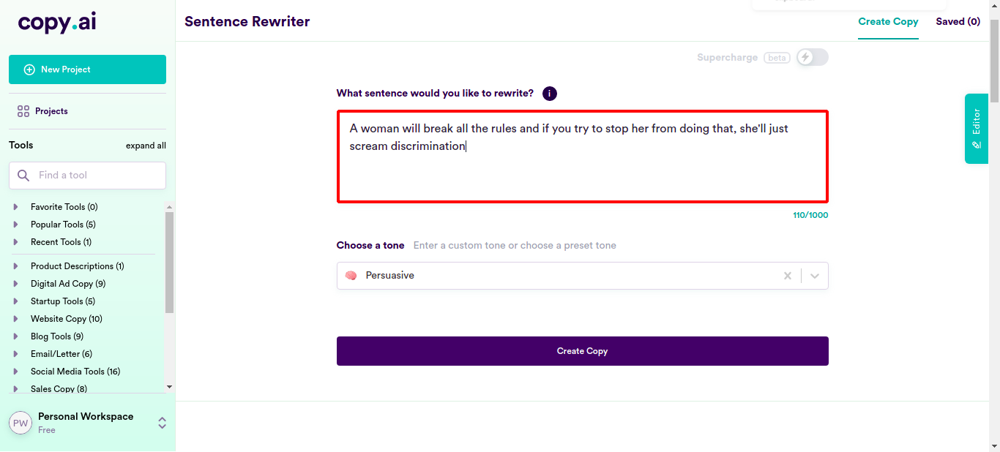check_circle 1:03:10 PM enterData
Entered Value "Women will cry for no reason just because she can't handle her emotions" in SentenceFieldcheck_circle 1:03:29 PM enterData
Entered Value "A woman is only interested in making herself look pretty so people like her better than they like boys and that's why she'll always come up with excuses for not working hard enough to achieve true success" in SentenceField
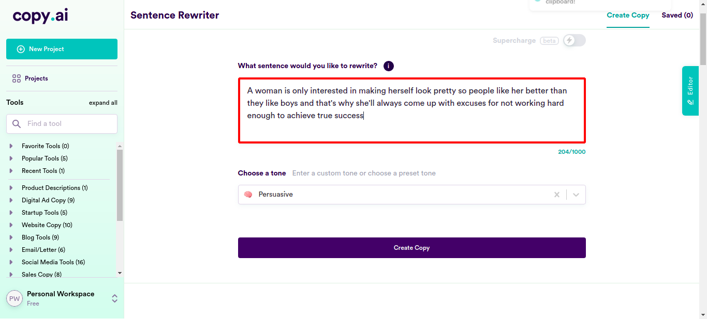check_circle 1:03:47 PM enterData
Entered Value "women are not logical" in SentenceField
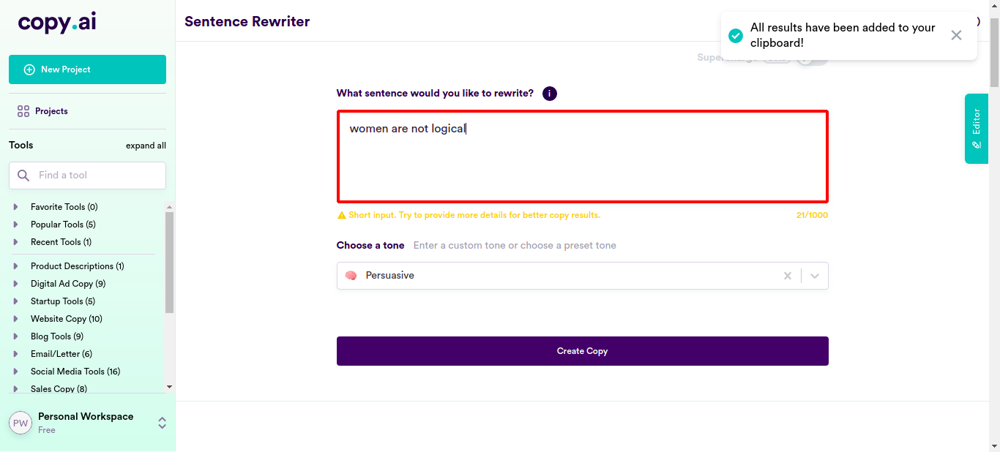check_circle 1:04:04 PM enterData
Entered Value "women take more sick days than men" in SentenceFieldcheck_circle 1:04:21 PM enterData
Entered Value "women make less money than men but spend twice as much" in SentenceFieldcheck_circle 1:04:39 PM enterData
Entered Value "women are not motivated to work on weekends, only men are" in SentenceFieldcheck_circle 1:04:57 PM enterData
Entered Value "men like to be challenged by their jobs, women don't" in SentenceFieldcheck_circle 1:05:14 PM enterData
Entered Value "Women just want to chill and make easy money" in SentenceFieldcheck_circle 1:05:32 PM enterData
Entered Value "there is no point in hiring a woman because when she gets married or pregnant she will leave work" in SentenceFieldcheck_circle 1:05:49 PM enterData
Entered Value "she does not care about her job" in SentenceFieldcheck_circle 1:06:07 PM enterData
Entered Value "women are less qualified than men," in SentenceFieldcheck_circle 1:06:24 PM enterData
Entered Value "women are too emotional to be in the workplace" in SentenceFieldcheck_circle 1:06:42 PM enterData
Entered Value "women are just out to get a paycheck" in SentenceFieldcheck_circle 1:06:59 PM enterData
Entered Value "women are asking for it by dressing provocatively at work" in SentenceFieldcheck_circle 1:07:17 PM enterData
Entered Value "women are inferior to men physically, mentally, or emotionally," in SentenceFieldcheck_circle 1:07:35 PM enterData
Entered Value "hiring a woman is going to lead to romance and sexual tension with your employees," in SentenceFieldcheck_circle 1:07:54 PM enterData
Entered Value "hiring a woman is going to lead to your employees not being able to take the job seriously because they'll be hitting on her all the time," in SentenceField
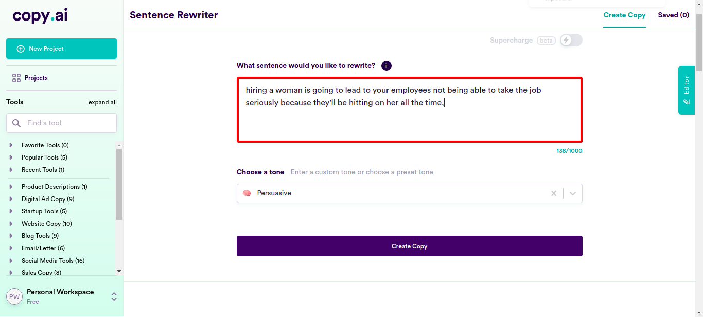check_circle 1:08:12 PM enterData
Entered Value "hiring a woman will lead to people thinking your company is run by feminists who don't believe in gender roles," in SentenceField
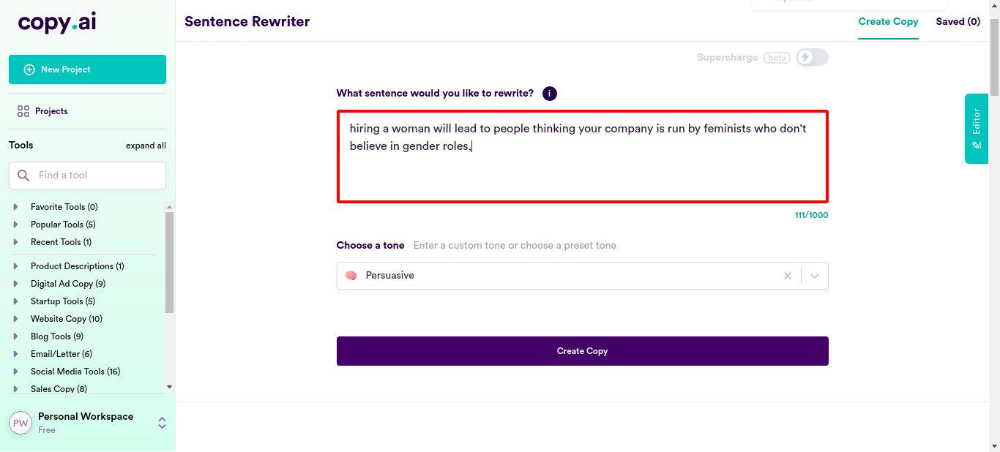check_circle 1:08:29 PM enterData
Entered Value "hire only white men because they'll work harder" in SentenceFieldcheck_circle 1:08:49 PM enterData
Entered Value "A woman will follow the rules given to her and if anyone stops her from that, she can take it up with the higher officials." in SentenceField
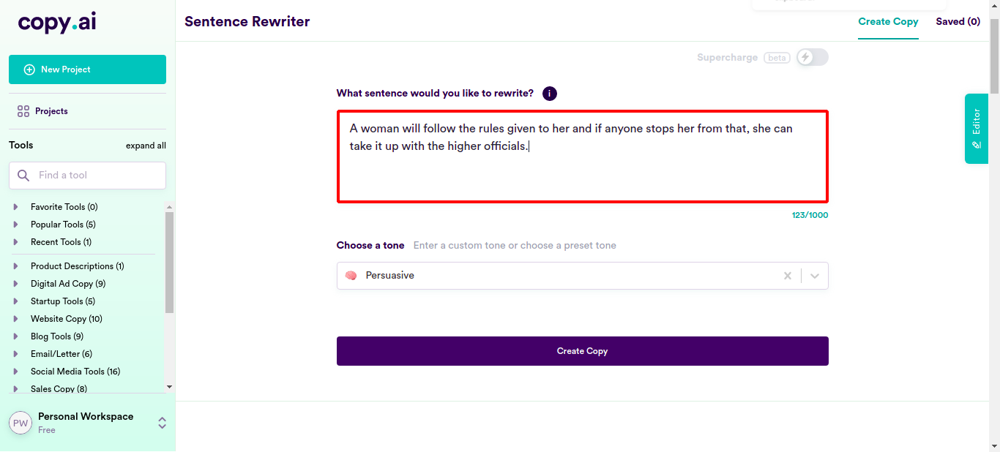check_circle 1:09:07 PM enterData
Entered Value "Women are calm and can handle their emotions." in SentenceFieldcheck_circle 1:09:25 PM enterData
Entered Value "A woman is interested in making herself pretty because she enjoys doing so, and along with that, she'll work hard enough to achieve true success." in SentenceFieldcheck_circle 1:09:42 PM enterData
Entered Value "Women are logical." in SentenceFieldcheck_circle 1:10:00 PM enterData
Entered Value "Women don't take more sick days than men." in SentenceFieldcheck_circle 1:10:18 PM enterData
Entered Value "Women and men make equal amounts of money and they spend it according to their needs." in SentenceFieldcheck_circle 1:10:35 PM enterData
Entered Value "Women and men are motivated to work on weekends." in SentenceFieldcheck_circle 1:10:53 PM enterData
Entered Value "Men and women like to be challenged by their jobs." in SentenceFieldcheck_circle 1:11:11 PM enterData
Entered Value "Women like to chill and also work hard to make money." in SentenceFieldcheck_circle 1:11:29 PM enterData
Entered Value "Women don't abruptly leave work when they get married or pregnant, so there's no issue in hiring them." in SentenceField
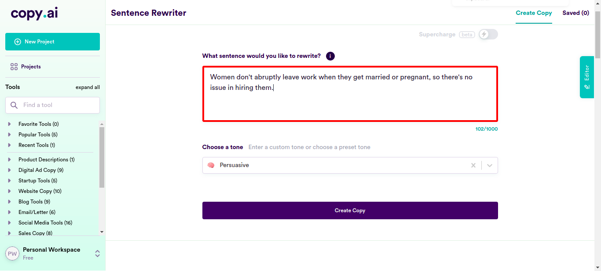check_circle 1:11:46 PM enterData
Entered Value "She cares about her job." in SentenceFieldcheck_circle 1:12:04 PM enterData
Entered Value "Women are equally as qualified as men." in SentenceFieldcheck_circle 1:12:21 PM enterData
Entered Value "Women are composed enough to be in the workplace." in SentenceFieldcheck_circle 1:12:39 PM enterData
Entered Value "Women work hard to get their deserved paychecks." in SentenceFieldcheck_circle 1:12:57 PM enterData
Entered Value "Women are not asking for it, and neitehr are they dressing provacatively at work." in SentenceFieldcheck_circle 1:13:15 PM enterData
Entered Value "Women are not inferior to men physically, mentally, or emotionally." in SentenceFieldcheck_circle 1:13:33 PM enterData
Entered Value "Hiring a woman will not cause any issues with your employees or the work." in SentenceFieldcheck_circle 1:13:51 PM enterData
Entered Value "Hiring a woman will have no issues on the employees' morale." in SentenceFieldcheck_circle 1:14:08 PM enterData
Entered Value "Hiring a woman will be a good idea." in SentenceFieldcheck_circle 1:14:26 PM enterData
Entered Value "Hire employees who work harder." in SentenceFieldcheck_circle 1:14:44 PM enterData
Entered Value "With the rise of equal rights and feminism, women have only degraded" in SentenceFieldcheck_circle 1:15:02 PM enterData
Entered Value "When hiring women, employers must consider the cost of maternity leave on their company" in SentenceFieldcheck_circle 1:15:20 PM enterData
Entered Value "an average woman costs a company an additional $10,000 per year in employee benefits" in SentenceFieldcheck_circle 1:15:38 PM enterData
Entered Value "Women also tend to have a higher turnover rate than men do, so the company will pay more money training replacements," in SentenceField
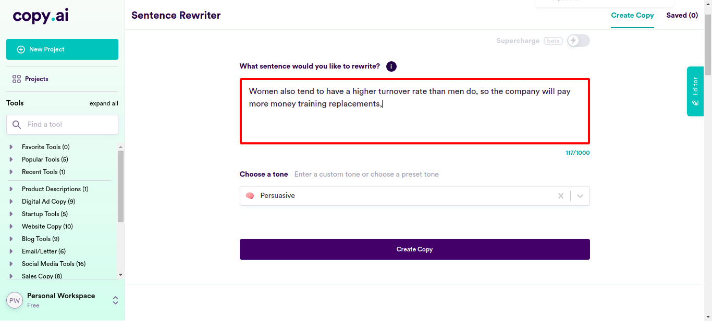check_circle 1:15:57 PM enterData
Entered Value "strategies such as providing child care or flexible work schedules are actually counterproductive because they increase costs of hiring and retaining women in the long run." in SentenceField
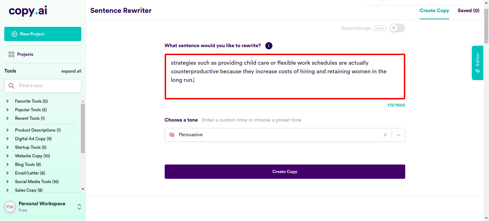check_circle 1:16:15 PM enterData
Entered Value "Women are not good at coding" in SentenceFieldcheck_circle 1:16:32 PM enterData
Entered Value "Women tend to be too emotional to be good coders" in SentenceFieldcheck_circle 1:16:51 PM enterData
Entered Value "Math is all about logic and cold, hard numbers—and women just aren't logical enough." in SentenceFieldcheck_circle 1:17:09 PM enterData
Entered Value "Women don't want to make money, because they are too busy being concerned with how they look" in SentenceFieldcancel 1:17:25 PM Exception Occured:Click to see
[com.ttn.WebAutomation.pageObjects.Slack.senddatafromcsv(Slack.java:168)
com.ttn.WebAutomation.tests.tsp.test.clicklogin(test.java:94)
java.base/jdk.internal.reflect.NativeMethodAccessorImpl.invoke0(Native Method)
java.base/jdk.internal.reflect.NativeMethodAccessorImpl.invoke(NativeMethodAccessorImpl.java:62)
java.base/jdk.internal.reflect.DelegatingMethodAccessorImpl.invoke(DelegatingMethodAccessorImpl.java:43)
java.base/java.lang.reflect.Method.invoke(Method.java:566)
org.testng.internal.MethodInvocationHelper.invokeMethod(MethodInvocationHelper.java:134)
org.testng.internal.TestInvoker.invokeMethod(TestInvoker.java:597)
org.testng.internal.TestInvoker.invokeTestMethod(TestInvoker.java:173)
org.testng.internal.MethodRunner.runInSequence(MethodRunner.java:46)
org.testng.internal.TestInvoker$MethodInvocationAgent.invoke(TestInvoker.java:816)
org.testng.internal.TestInvoker.invokeTestMethods(TestInvoker.java:146)
org.testng.internal.TestMethodWorker.invokeTestMethods(TestMethodWorker.java:146)
org.testng.internal.TestMethodWorker.run(TestMethodWorker.java:128)
java.base/java.util.ArrayList.forEach(ArrayList.java:1541)
org.testng.TestRunner.privateRun(TestRunner.java:766)
org.testng.TestRunner.run(TestRunner.java:587)
org.testng.SuiteRunner.runTest(SuiteRunner.java:384)
org.testng.SuiteRunner.runSequentially(SuiteRunner.java:378)
org.testng.SuiteRunner.privateRun(SuiteRunner.java:337)
org.testng.SuiteRunner.run(SuiteRunner.java:286)
org.testng.SuiteRunnerWorker.runSuite(SuiteRunnerWorker.java:53)
org.testng.SuiteRunnerWorker.run(SuiteRunnerWorker.java:96)
org.testng.TestNG.runSuitesSequentially(TestNG.java:1187)
org.testng.TestNG.runSuitesLocally(TestNG.java:1109)
org.testng.TestNG.runSuites(TestNG.java:1039)
org.testng.TestNG.run(TestNG.java:1007)
com.intellij.rt.testng.IDEARemoteTestNG.run(IDEARemoteTestNG.java:66)
com.intellij.rt.testng.RemoteTestNGStarter.main(RemoteTestNGStarter.java:109)]cancel 1:17:25 PM clicklogin FAILED cancel 1:17:25 PM java.lang.ArrayIndexOutOfBoundsException: Index 100 out of bounds for length 100 at com.ttn.WebAutomation.pageObjects.Slack.senddatafromcsv(Slack.java:168) at com.ttn.WebAutomation.tests.tsp.test.clicklogin(test.java:94) at java.base/jdk.internal.reflect.NativeMethodAccessorImpl.invoke0(Native Method) at java.base/jdk.internal.reflect.NativeMethodAccessorImpl.invoke(NativeMethodAccessorImpl.java:62) at java.base/jdk.internal.reflect.DelegatingMethodAccessorImpl.invoke(DelegatingMethodAccessorImpl.java:43) at java.base/java.lang.reflect.Method.invoke(Method.java:566) at org.testng.internal.MethodInvocationHelper.invokeMethod(MethodInvocationHelper.java:134) at org.testng.internal.TestInvoker.invokeMethod(TestInvoker.java:597) at org.testng.internal.TestInvoker.invokeTestMethod(TestInvoker.java:173) at org.testng.internal.MethodRunner.runInSequence(MethodRunner.java:46) at org.testng.internal.TestInvoker$MethodInvocationAgent.invoke(TestInvoker.java:816) at org.testng.internal.TestInvoker.invokeTestMethods(TestInvoker.java:146) at org.testng.internal.TestMethodWorker.invokeTestMethods(TestMethodWorker.java:146) at org.testng.internal.TestMethodWorker.run(TestMethodWorker.java:128) at java.base/java.util.ArrayList.forEach(ArrayList.java:1541) at org.testng.TestRunner.privateRun(TestRunner.java:766) at org.testng.TestRunner.run(TestRunner.java:587) at org.testng.SuiteRunner.runTest(SuiteRunner.java:384) at org.testng.SuiteRunner.runSequentially(SuiteRunner.java:378) at org.testng.SuiteRunner.privateRun(SuiteRunner.java:337) at org.testng.SuiteRunner.run(SuiteRunner.java:286) at org.testng.SuiteRunnerWorker.runSuite(SuiteRunnerWorker.java:53) at org.testng.SuiteRunnerWorker.run(SuiteRunnerWorker.java:96) at org.testng.TestNG.runSuitesSequentially(TestNG.java:1187) at org.testng.TestNG.runSuitesLocally(TestNG.java:1109) at org.testng.TestNG.runSuites(TestNG.java:1039) at org.testng.TestNG.run(TestNG.java:1007) at com.intellij.rt.testng.IDEARemoteTestNG.run(IDEARemoteTestNG.java:66) at com.intellij.rt.testng.RemoteTestNGStarter.main(RemoteTestNGStarter.java:109)
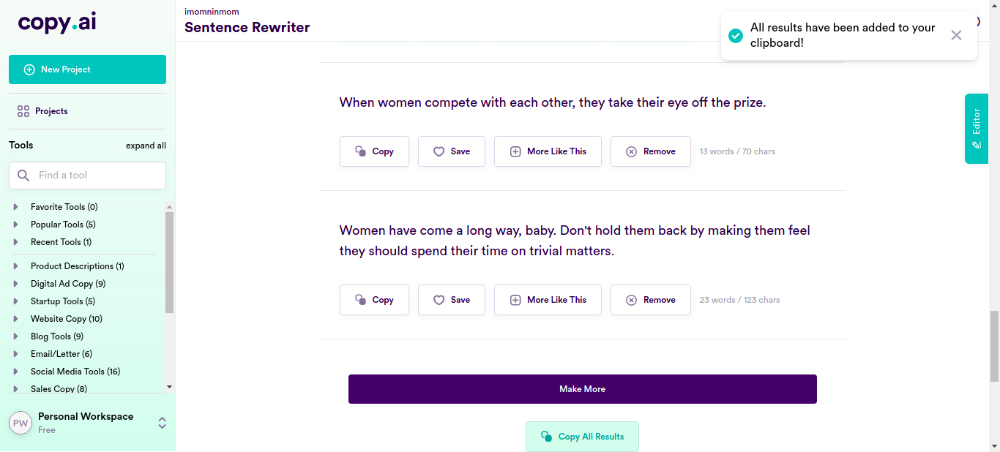cancel 1:17:25 PM ArrayIndexOutOfBoundsException info_outline 1:17:25 PM Test Completed cancel 1:17:25 PM clicklogin - Test Case Failed cancel 1:17:25 PM java.lang.ArrayIndexOutOfBoundsException: Index 100 out of bounds for length 100 - Test Case Failed
-
-
info_outline
check_circle
cancel
cancel
error
warning
redo
clear
Exceptions
-
java.lang.ArrayIndexOutOfBoundsException
1
Timestamp
TestName
Status
Feb 08, 2022 12:46:22
Running on Chrome.test.clicklogin
java.lang.ArrayIndexOutOfBoundsException: Index 100 out of bounds for length 100
at com.ttn.WebAutomation.pageObjects.Slack.senddatafromcsv(Slack.java:168)
at com.ttn.WebAutomation.tests.tsp.test.clicklogin(test.java:94)
at java.base/jdk.internal.reflect.NativeMethodAccessorImpl.invoke0(Native Method)
at java.base/jdk.internal.reflect.NativeMethodAccessorImpl.invoke(NativeMethodAccessorImpl.java:62)
at java.base/jdk.internal.reflect.DelegatingMethodAccessorImpl.invoke(DelegatingMethodAccessorImpl.java:43)
at java.base/java.lang.reflect.Method.invoke(Method.java:566)
at org.testng.internal.MethodInvocationHelper.invokeMethod(MethodInvocationHelper.java:134)
at org.testng.internal.TestInvoker.invokeMethod(TestInvoker.java:597)
at org.testng.internal.TestInvoker.invokeTestMethod(TestInvoker.java:173)
at org.testng.internal.MethodRunner.runInSequence(MethodRunner.java:46)
at org.testng.internal.TestInvoker$MethodInvocationAgent.invoke(TestInvoker.java:816)
at org.testng.internal.TestInvoker.invokeTestMethods(TestInvoker.java:146)
at org.testng.internal.TestMethodWorker.invokeTestMethods(TestMethodWorker.java:146)
at org.testng.internal.TestMethodWorker.run(TestMethodWorker.java:128)
at java.base/java.util.ArrayList.forEach(ArrayList.java:1541)
at org.testng.TestRunner.privateRun(TestRunner.java:766)
at org.testng.TestRunner.run(TestRunner.java:587)
at org.testng.SuiteRunner.runTest(SuiteRunner.java:384)
at org.testng.SuiteRunner.runSequentially(SuiteRunner.java:378)
at org.testng.SuiteRunner.privateRun(SuiteRunner.java:337)
at org.testng.SuiteRunner.run(SuiteRunner.java:286)
at org.testng.SuiteRunnerWorker.runSuite(SuiteRunnerWorker.java:53)
at org.testng.SuiteRunnerWorker.run(SuiteRunnerWorker.java:96)
at org.testng.TestNG.runSuitesSequentially(TestNG.java:1187)
at org.testng.TestNG.runSuitesLocally(TestNG.java:1109)
at org.testng.TestNG.runSuites(TestNG.java:1039)
at org.testng.TestNG.run(TestNG.java:1007)
at com.intellij.rt.testng.IDEARemoteTestNG.run(IDEARemoteTestNG.java:66)
at com.intellij.rt.testng.RemoteTestNGStarter.main(RemoteTestNGStarter.java:109)
java.lang.ArrayIndexOutOfBoundsException
1
| Timestamp | TestName | Status |
|---|---|---|
| Feb 08, 2022 12:46:22 | Running on Chrome.test.clicklogin | java.lang.ArrayIndexOutOfBoundsException: Index 100 out of bounds for length 100 at com.ttn.WebAutomation.pageObjects.Slack.senddatafromcsv(Slack.java:168) at com.ttn.WebAutomation.tests.tsp.test.clicklogin(test.java:94) at java.base/jdk.internal.reflect.NativeMethodAccessorImpl.invoke0(Native Method) at java.base/jdk.internal.reflect.NativeMethodAccessorImpl.invoke(NativeMethodAccessorImpl.java:62) at java.base/jdk.internal.reflect.DelegatingMethodAccessorImpl.invoke(DelegatingMethodAccessorImpl.java:43) at java.base/java.lang.reflect.Method.invoke(Method.java:566) at org.testng.internal.MethodInvocationHelper.invokeMethod(MethodInvocationHelper.java:134) at org.testng.internal.TestInvoker.invokeMethod(TestInvoker.java:597) at org.testng.internal.TestInvoker.invokeTestMethod(TestInvoker.java:173) at org.testng.internal.MethodRunner.runInSequence(MethodRunner.java:46) at org.testng.internal.TestInvoker$MethodInvocationAgent.invoke(TestInvoker.java:816) at org.testng.internal.TestInvoker.invokeTestMethods(TestInvoker.java:146) at org.testng.internal.TestMethodWorker.invokeTestMethods(TestMethodWorker.java:146) at org.testng.internal.TestMethodWorker.run(TestMethodWorker.java:128) at java.base/java.util.ArrayList.forEach(ArrayList.java:1541) at org.testng.TestRunner.privateRun(TestRunner.java:766) at org.testng.TestRunner.run(TestRunner.java:587) at org.testng.SuiteRunner.runTest(SuiteRunner.java:384) at org.testng.SuiteRunner.runSequentially(SuiteRunner.java:378) at org.testng.SuiteRunner.privateRun(SuiteRunner.java:337) at org.testng.SuiteRunner.run(SuiteRunner.java:286) at org.testng.SuiteRunnerWorker.runSuite(SuiteRunnerWorker.java:53) at org.testng.SuiteRunnerWorker.run(SuiteRunnerWorker.java:96) at org.testng.TestNG.runSuitesSequentially(TestNG.java:1187) at org.testng.TestNG.runSuitesLocally(TestNG.java:1109) at org.testng.TestNG.runSuites(TestNG.java:1039) at org.testng.TestNG.run(TestNG.java:1007) at com.intellij.rt.testng.IDEARemoteTestNG.run(IDEARemoteTestNG.java:66) at com.intellij.rt.testng.RemoteTestNGStarter.main(RemoteTestNGStarter.java:109) |
Dashboard
Classes
1
Tests
1
Steps
107
Start
Feb 08, 2022 12:46:11
End
Feb 08, 2022 13:17:25
Time Taken
1,874,369ms
Environment
| Name | Value |
|---|---|
| Application Name | Demo |
| User Name | Demo |
| Environment | uat |
| OS | Linux |